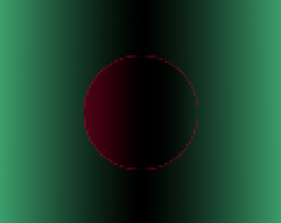

Ricochet
[ Play here or read more below! ]
Ricochet was my first personal project that I was able to fully polish, complete, and release. I wanted to create a simple game centered around one compelling central mechanic in order to truly practice the idea of completing a project, rather than getting caught in the cycle of fun prototype after prototype. Of course, in practice, the game ended up being not as simple as I thought, but in a good way; I'm proud of how a strong core mechanic ended up leading to more possibilities than I thought, and I would still potentially be excited to come back to the game for small updates. This project was ultimately a ton of fun to make and taught me a lot about the logistics of larger projects, as well as organizing larger code bases.
Retrospective - 9/19/21
This project had ultimately become one of the biggest turning points in my journey as a game developer, not necessarily because it led to success, but rather because it was once one of my biggest mistakes. I started development on this project not only with a fun core idea, but also a drive to complete it fast. That focus on speed ultimately led to my downfall, as when I started to near the first final build of the game, I hit a wall: a flurry of errors and bugs, and an endless list of potential solutions that never worked. Try as I might, I never solved all of those bugs. And I couldn't: I hardly knew what most of them were being caused by; and whenever I did manage to solve one, another popped up as a result. The mistake that led to all of this mess was structured just as tightly as a giant knot. After learning about the Singleton pattern while simultaneously being unaware of the pitfalls of too much shared state, I quickly dug myself into a whole for the sake of faster development. While quick prototyping is certainly a good thing, as with anything, there is always a balance, and I realized crossed the line of overuse far too late. After learning the futility of trying to fix what my code currently resembled, I had one option left: start all over.
And I managed to do just that. After giving myself plenty of time and space to breathe, as well as gain some perspective and forgive myself for my mistake, I came back to this project with a fresh mind and a fresh template. After much more planning and deliberation on the structure of the project, as well as a lot more general experience under my belt, I'm quite proud of the result and the process that created it. There are still plans to expand this project in the future to be more accessible: it currently can't connect to services like Google Play, and even though it's designed for mobile, it's only possible to play it as an executable on PC for now. That being said, enjoy!
